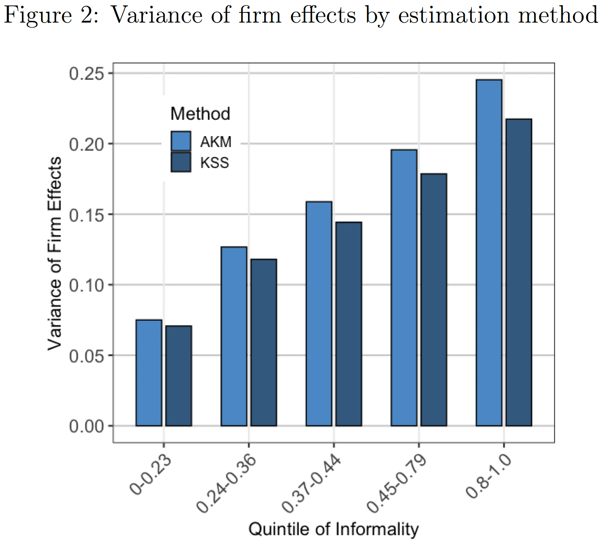

Research
Job Market Paper: Formality as a Financing Decision
Abstract
Can bank loans make informal firms formalize? We match the universe of bank loans, the social security records, and the economic censuses in Mexico to track formality, loans, and firm transitions from 2005 to 2025. Three facts emerge. Three quarters of firms with a bank loan are informal; informal firms pay higher rates, provide more collateral on collateralized loans, and obtain smaller loans; and firms move between formality and informality in both directions. We develop a model in which firms that need a loan and are at the margin between being formal and being informal change their status when the relative terms or availability of loans change. Leveraging bank credit supply shocks, we find that a ten percent credit supply expansion widens the financial advantage of formal firms and, as the model predicts, raises the number of firms that formalize by 850 (0.5 percent) and lowers the number of firms that become informal by 600 (0.4 percent) per five-year window in our sample markets. We demonstrate that bank loans affect not only formal firms but also informal ones, and are a lever for formalization.


Why Are Firm Effects More Dispersed in Developing Countries? Evidence from Mexico
Abstract
A large literature that decomposes wage inequality into worker and firm components finds that firm effects explain a larger share of wage dispersion in developing countries than in advanced economies. This paper argues that the informal sector explains it. Using the economic census and matched employer-employee data from Mexico's manufacturing sector, we estimate AKM two-way fixed effects models and show that labor markets with more informality have firm effects that are more dispersed, explain a larger share of wage variance, and are lower on average. This evidence motivates a labor market model with imperfect competition, compensating differentials, and informality. This framework allows us to decompose the estimated AKM firm effects into productivity pass-through, amenities, and market power. The estimation is ongoing and will allow us to quantify how much of the dispersion in firm effects reflects informality.
